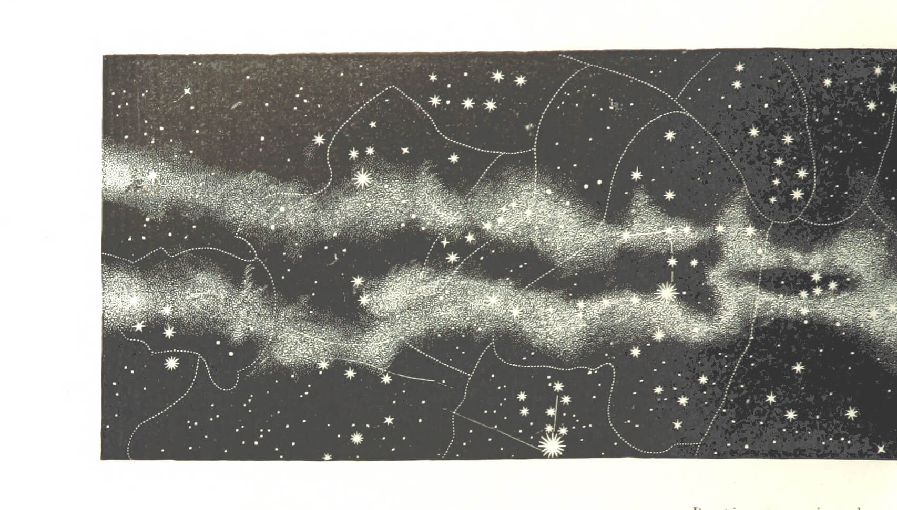

Näyttökuvia codepenin koodeista, joita hyödynsin sivustolla. Muokkasin koodia edelleen sopimaan sivustooni.
Tällä viikolla käsittelimme mm. sivujen responsiivisuutta, kuten media query -ominaisuutta, fonttien ja @font-face –elementin käyttöä sekä hover-ominaisuuksia. Lisäksi opettelimme, miten favicon lisätään sivulle.
Käytin tällä viikolla paljon aikaa 2. tehtävän parissa. Löysin Codepenistä koodin, jossa tähdet liikkuvat nopeasti kohti katsojaa. Muokkasin koodia niin, että tähtiä oli enemmän ja ne liikkuivat eri tahtiin laajemmalla alueella. Tämä vei paljon aikaa. Huomaan, että koodaaminen on usein aikaa vievää – aina ilmenee uusia ongelmia, ja jotain täytyy jatkuvasti muuttaa. Olen pyytänyt tekoälyltä apua, mikä on nopeuttanut työtä, mutta yllättävän usein se ei ratkaise ongelmia toivomallani tavalla tai en osaa ilmaista ongelmiani riittävän selkeästi. Löysin myös Codepenistä pyörivän pallon, jota muokkasin niin, että sain sivulle pyörivät kiertoradat. Suurensin niiden kokoa ja siirsin niitä sopiviin paikkoihin. Lopulta olin tyytyväinen lopputulokseen. Seuraavaksi löysin koodin, jossa planeetat pyörivät, ja niihin voi liittää oman kuvan planeetan pinnaksi. Muokkasin ottamiani kuvia niin, että ne sopivat planeettojen pinnoiksi, ja pienensin kuvien tiedostokokoa. Lisäsin planeetoille myös varjoja, jotta ne näyttäisivät kolmiulotteisemmilta.
Seuraavaksi aloin yhdistellä näitä elementtejä samaan HTML-tiedostoon. Olin luonut tähdille ja kiertoradoille omat tyylitiedostot. Elementtien yhdistäminen oli yllättävän haastavaa ja aikaa vievää, mutta sain sen lopulta toimimaan.
Torstaina lisäsin koodiin JavaScriptin avulla tekstibokseja, jotka ilmestyvät, kun planeettaa klikkaa. Tämä vei koko päivän. Viikon aikana etsin myös sopivia fontteja, mutta niiden löytäminen sivustolle oli haastavaa. Jatkan vielä sopivan fontin etsintää. Tein myös kokeiluja siitä, miten saisin normaalista kuvasta “pikselitaiteen” näköisen - sain sen tehtyä illustratorissa.
Käytin myös aikaa parantaakseni sivuston responsiivisuutta. Muutin mittayksiköitä ja yritin järjestää planeetat grid-asetteluun. Käytin tähän koko illan, mutta en saanut sitä toimimaan, vaikka kysyin apua tekoälyltä. Lopulta päätin hyödyntää media query -ominaisuutta, jotta planeetat pienenevät tietyssä pikselikoossa.
Tällä viikolla opin, kuinka koodaaminen on sekä palkitsevaa että haastavaa. Ongelmanratkaisu on ehdottomasti yksi koodaamisen mielekkäimmistä puolista. On todella tyydyttävää, kun onnistuu löytämään ratkaisun ja saa jonkin asian toimimaan juuri niin kuin on suunnitellut. Toisaalta, turhautuminen kasvaa nopeasti, jos ongelma ei ratkea, vaikka kuinka yrittäisi erilaisia lähestymistapoja. Erityisesti aloittelijana huomaan, että koodin kanssa työskentely vie paljon aikaa ja vaatii kärsivällisyyttä.
Tunsin kuitenkin onnistumisen iloa, kun sain esimerkiksi tekstiboksit toimimaan haluamallani tavalla. Olen myös tyytyväinen siihen, miltä sivu näyttää tällä hetkellä. Mielestäni olen onnistunut tulkitsemaan arkistokuvaa, joka oli inspiraationa. Sivulla on samoja elementtejä mutta koodattuna ja animoituna. Sivu on omasta mielestäni visuaalisesti hienompi kuin osasin alun perin odottaa, ja olen tyytyväinen että olen kokeillut ja testaillut eri juttuja vaikka se onkin vienyt paljon aikaa.
Näyttökuvia sivustosta tämän viikon jälkeen.
Arkistokuva, joka toimii inspiraationa sivulle.